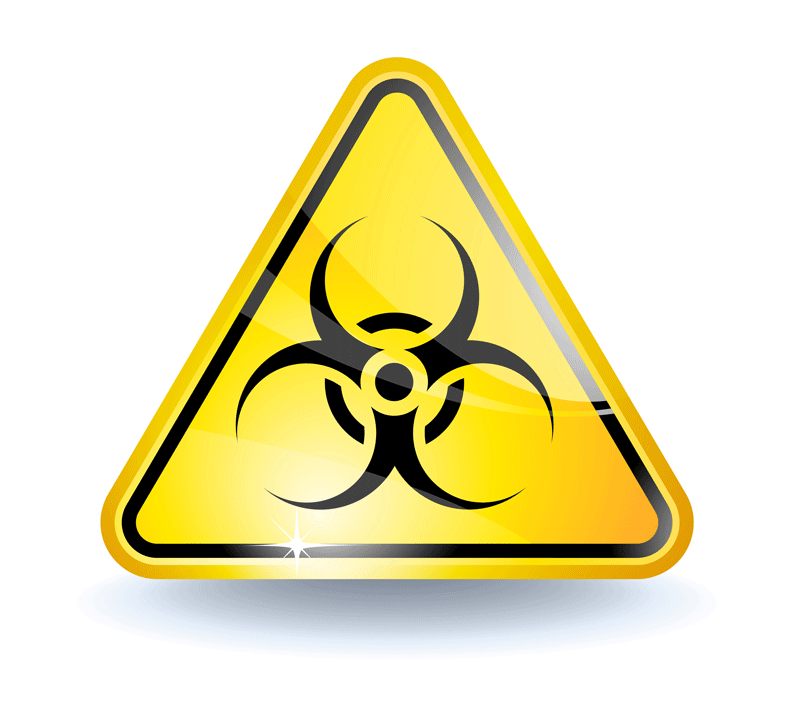
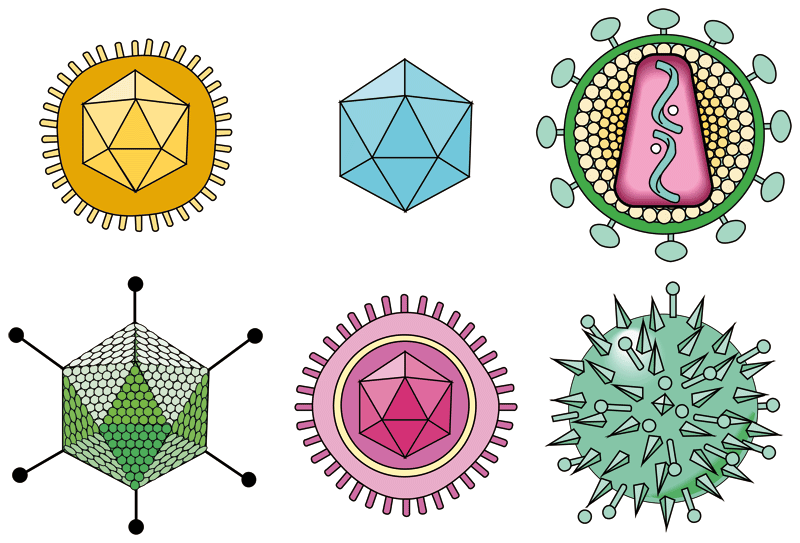
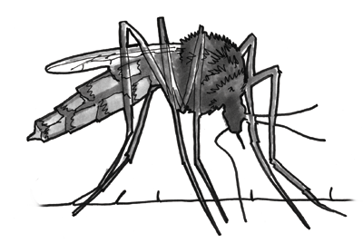
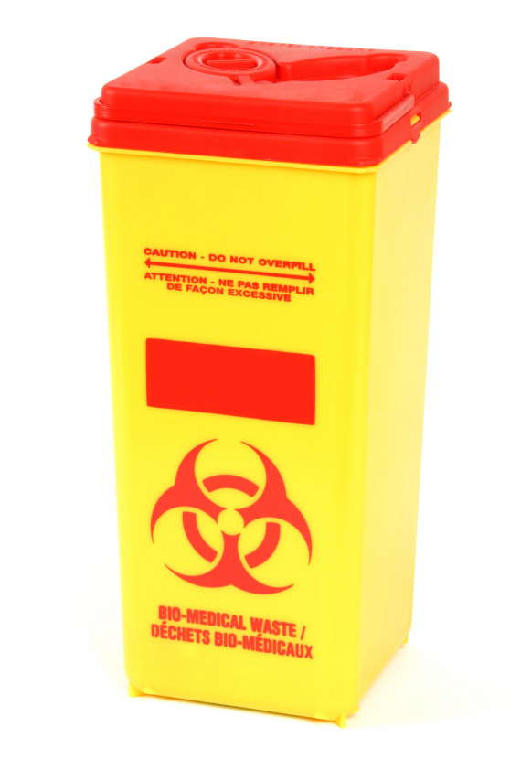

Hygiene in First Aid
Hygiene in First Aid
Ensuring cleanliness in all first aid situations is extremely important. A first aider must take precautions to ensure that the risk of infection is minimised by practising good first aid hygiene procedures.
Infectious diseases are those diseases which cause infections to the human body, and in some cases are transmitted by contact or by cross-infection.
Infection may be due to bacteria, viruses, parasites or fungi.

The usual methods of communication are: direct contact (with an infected person); indirect contact (through coughing, air conditioning, or similar); or through a host (insects, worms).
Many deadly infectious diseases have been eradicated, but several, such as poliomyelitis (a virus), are again on the increase. Many are preventable by immunisation. Some, such as the Human Immunodeficiency Virus (HIV), have no cure or immunisation as yet. Examples of infectious diseases are:
Viral Infections. Measles, mumps, rubella, hepatitis, influenza, chickenpox, HIV and the common cold.
Bacterial Infections. Throat infections, whooping cough, diphtheria, rheumatic fever, tuberculosis strains, cholera, staphylococcus infection and some forms of meningitis.
Parasitic Infections. Malaria, tapeworm, hookworm, itch mites, pubic and body lice.
Fungal Infections. Ringworm, tinea ('Athlete's Foot') and thrush.
The human body has natural defences against infection and remains immune to certain types. Immunity usually comes from surviving previous exposure with resultant antibodies being produced. The blood contains leucocytes (white blood cells), which help produce antibodies. The leucocytes and antibodies [try to] combat any infection which invades the body. Unfortunately, while the body responds quickly to infection, the initial defences can be overwhelmed if the infectious agent is numerous. When this happens the casualty develops the disease.
It is at this stage that the body requires help in the form of medically prescribed antibiotics or similar drugs.
General precautions
While there is little that the first aider can do to cure an infection there is a great deal that you can do to limit the risk of infection and treat the symptoms of minor infections. However, the first aid provider should be familiar with the signs and symptoms of the common diseases, and advise the infected person to seek appropriate medical attention.
Advice that the first aid provider can offer is:
 care of the susceptible, ie. the ill, the elderly, and the very young
care of the susceptible, ie. the ill, the elderly, and the very young
 care in nutrition and preparation of food
care in nutrition and preparation of food
 maintenance of personal hygiene
maintenance of personal hygiene
 maintenance of sanitary standards
maintenance of sanitary standards
 avoid direct contact with infection
avoid direct contact with infection
 avoid transmitting infection
avoid transmitting infection
First aid hygiene
 It is important that first aid procedures have due regard for the danger of cross- infection. Simple rules of personal hygiene and wearing gloves are sufficient to guard both the first aid provider and the casualty from contamination when treating or caring for a casualty.
It is important that first aid procedures have due regard for the danger of cross- infection. Simple rules of personal hygiene and wearing gloves are sufficient to guard both the first aid provider and the casualty from contamination when treating or caring for a casualty.
PRIOR TO TREATMENT
 wash hands with soap and water, or rinse with antiseptic
wash hands with soap and water, or rinse with antiseptic
 ensure that hands are washed thoroughly between fingers and under nails
ensure that hands are washed thoroughly between fingers and under nails
 place a barrier between you and the casualty's body fluids
place a barrier between you and the casualty's body fluids
 always wear nitrile or latex gloves if available
always wear nitrile or latex gloves if available
 take care not to touch any unclean object when wearing gloves or once hands are washed
take care not to touch any unclean object when wearing gloves or once hands are washed
 if possible, use a protective cover over clothing
if possible, use a protective cover over clothing
 cover any adjacent areas likely to produce infection
cover any adjacent areas likely to produce infection
DURING TREATMENT
 use a face shield or mask with a one-way-valve or filter, if available, when performing resuscitation
use a face shield or mask with a one-way-valve or filter, if available, when performing resuscitation
 use only clean bandages and dressings
use only clean bandages and dressings
 avoid coughing, breathing, or speaking over the wound
avoid coughing, breathing, or speaking over the wound
 avoid contact with body fluids
avoid contact with body fluids
 avoid treating more than one casualty without washing hands and changing gloves
avoid treating more than one casualty without washing hands and changing gloves
AFTER TREATMENT
 clean up both casualty and yourself
clean up both casualty and yourself
 clean up the immediate vicinity
clean up the immediate vicinity
 dispose of dressings, bandages, sharps, gloves and soiled clothing safely and correctly
dispose of dressings, bandages, sharps, gloves and soiled clothing safely and correctly
 wash hands with soap and water thoroughly, even if gloves were used
wash hands with soap and water thoroughly, even if gloves were used
Waste materials can be placed inside a plastic bag, which is then placed inside another plastic bag and tied securely. Use a biohazard bag if possible. Do not place in rubbish bin. Seek advice from your local health department on disposal options.
Needle-Stick Injuries
The principal risk associated with needle stick injury is contracting blood borne viruses such as HIV (AIDS) and HBV (Hepatitis B).
There is a low risk of a person who is pricked or scratched by a discarded needle being infected with AIDS, Hepatitis B and Hepatitis C.
The most common sharps injuries are from needle-sticks, typically on the index finger and thumb. Needle-stick injuries account for up to 80% of all accidental exposures to blood.
Ways of reducing the risk of needlestick injuries include:
 It is generally recommended that workers who may come in contact with blood or body fluids should receive Hepatitis B vaccinations
It is generally recommended that workers who may come in contact with blood or body fluids should receive Hepatitis B vaccinations
 Follow all safety procedures in the workplace
Follow all safety procedures in the workplace
 Latex or nitrile gloves will not protect you against needlestick injuries
Latex or nitrile gloves will not protect you against needlestick injuries
 Never bend or snap used needles
Never bend or snap used needles
 Never re-cap a needle
Never re-cap a needle
 Always place used needles into a clearly labelled and puncture-proof sharps approved container
Always place used needles into a clearly labelled and puncture-proof sharps approved container

Care and Treatment
 wash away the blood or body fluid with soap and water
wash away the blood or body fluid with soap and water
 if the eyes are contaminated, rinse eyes while open with water or saline
if the eyes are contaminated, rinse eyes while open with water or saline
 if blood gets into the mouth, spit it out and then repeatedly rinse with water
if blood gets into the mouth, spit it out and then repeatedly rinse with water
 refer the person immediately to a doctor or hospital emergency department who will assess the risk of transmission and discuss options for testing and treatment
refer the person immediately to a doctor or hospital emergency department who will assess the risk of transmission and discuss options for testing and treatment
 ensure the safe disposal of the sharp
ensure the safe disposal of the sharp
 report the incident immediately
report the incident immediately
 Dispose of waste in accordance with the requirements of the relevant local, State, Territory or Commonwealth authorities.
Dispose of waste in accordance with the requirements of the relevant local, State, Territory or Commonwealth authorities.